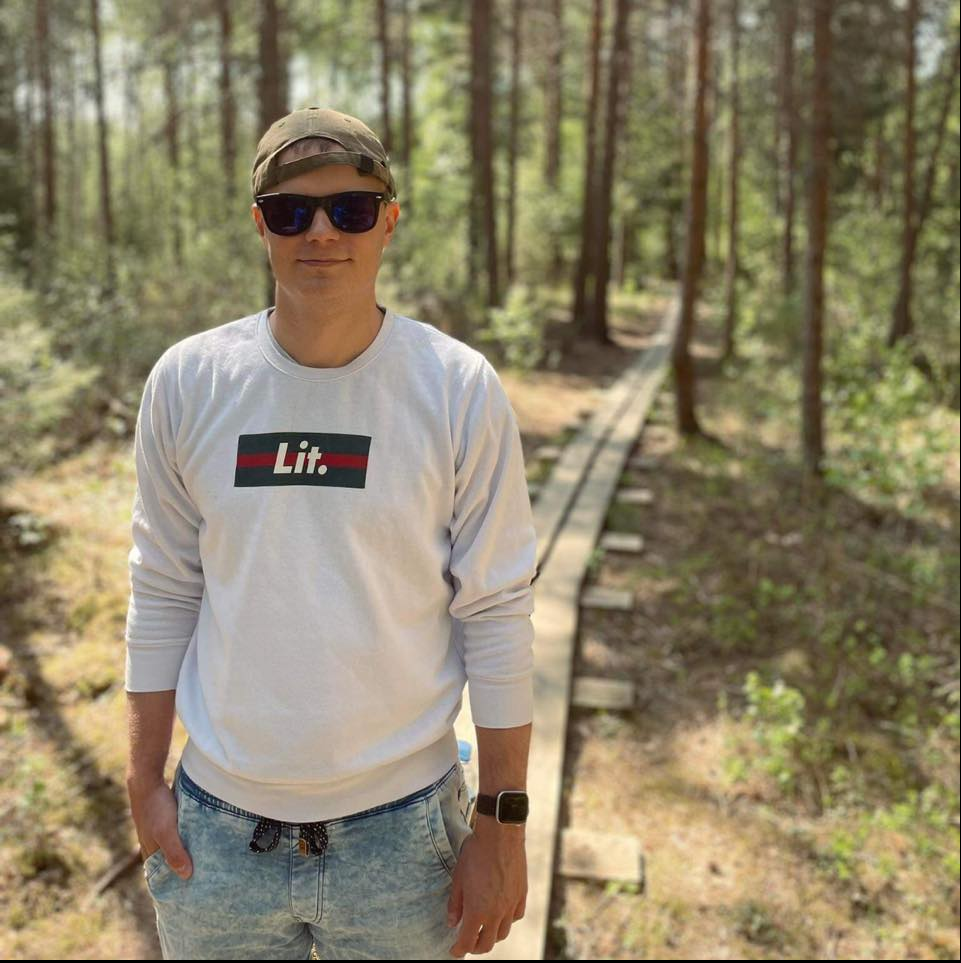

Sander Ratassepp Resume

Summary
An experienced IT Ecommerce solution specialist at Rimi. I am solving various incidents and Jira tasks what are landing to me. I am working in Baltic structured team and we are working in sprints in Jira. My work can be quite stressful, but in the end I am delivering all the results what are needed.
Education
- Tallinn Polytechnic school
Vocational secontary education, Computer Systems Networking and Telecommunications
Work experience
- IT Support Specialist - Telia Company
From January 2019 - May 2020
- Windows 10/11 installation to laptops/configuration
- Printer management/support
- Service Now (incidents, requests, tasks management)
- Office 365 administration
- E-commerce IT solutions specialist - Rimi Baltic Group
From May 2020 - Present
- SAP Commerce support experience (Baltic Rimi E-commerce orders management, order processes issue solving, order time slot configuration/management, and much more things)
- Service Now (incidents, requests, tasks management)
- Jira (Working in sprints, Working with developers, testing various bugs)
- Soti Mobicontrol (Configuring zebra handheld devices)
- Pikkit (In-house developed Rimi e-commerce order picking system. I was responsible for testing this system and finding bugs.)
- While on-call supporting the whole Baltic Rimi e-commerce stores
Skills
- SAP Commerce support experience
- Service Now
- Communication
- Documentation
- Handle stress
- Testing
- IT Support to Rimi ecommerce stores
- Active directory
- Office 365 administration
- User experience in Jira
About Me
Contact Me